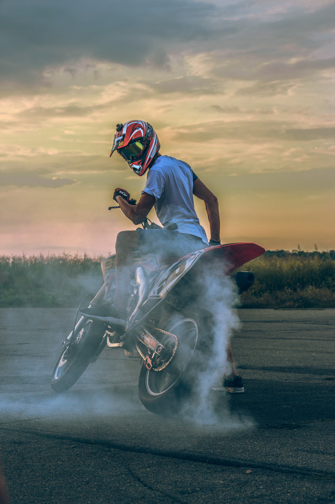
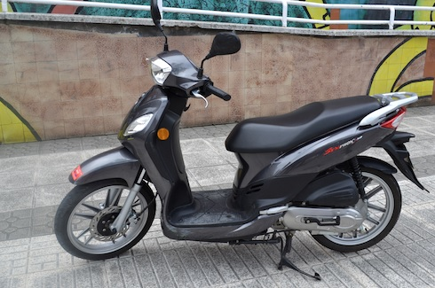
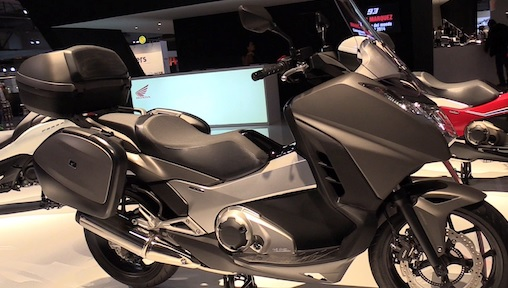
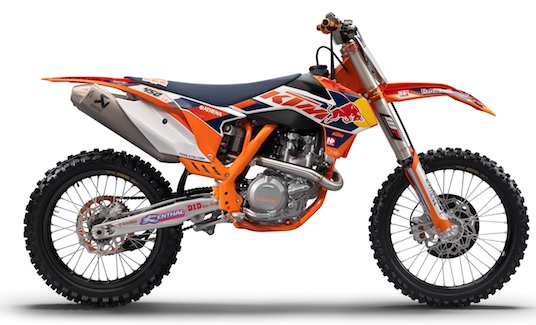
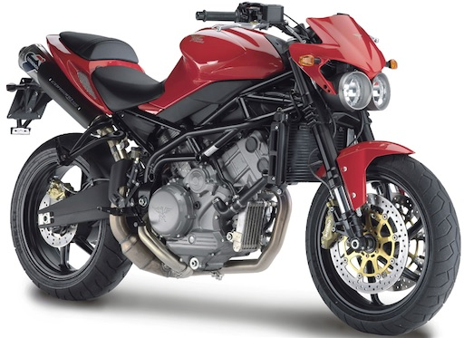
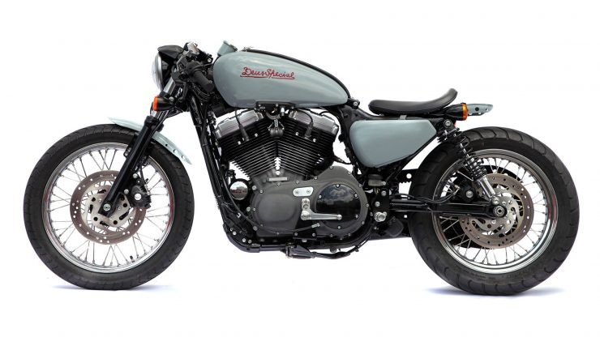

MOTOR-CYCLES
¡VIVE LA ADRENALINA!

Cada vez hay más aficionados al mundo de las dos ruedas. La conducción de una moto,
es más barata, más ecológica y ayuda a evitar los atascos. Pero hay algunos que van más allá.
Con la llegada de internet, han proliferado los foros de moteros que comparten trucos y experiencias.
TIPOS DE MOTO
CICLOMOTORES.
Según el Reglamento General de Vehículos, el ciclomotor no está considerado como un vehículo de motor, no pueden pasar de 45 km/h y su cilindrada es de 50 cc. SCOOTER.
El scooter es un tipo de moto con carrocería que protege de las inclemencias y ofrece mucha más versatilidad que una moto tradicional.
MEGASCOOTER, O MAXISCOOTER.
Tienen la facilidad de manejo de un scooter y las prestaciones de un motor de gran cilindrada. Si los scooter son ideales para conducir por ciudad, los megascooter están orientados para aquellos que viven fuera de la ciudad y tienen que moverse a ella diariamente. También son muy válidos para viajar. MOTOCROSS.
Pensadas para manejarse en el campo. Poseen ruedas de tacos para tener más adherencia y se manejan preferiblemente de pie para apoyarse en las curvas. NAKED.
Se llaman así por ir “desnudas”: llevar el motor al aire y no cubierto por el carenado tradicional. Van desde 125 cc hasta las más potentes de 1.000 cc. Al contrario de otras motos que solo buscan la estética, las naked sí que buscan velocidad. TURISMO DEPORTIVO.
Una de esas raras combinaciones de segmentos, algo así como fue la naked, pero en este caso mezclan una deportiva con una doble propósito. ¿El resultado?, una deportiva con mayor recorrido de suspensión, que la hace más cómoda en cuanto a posición de manejo pero con la respuesta de un motor de alta cilindrada. LAS MOTOS NUESTRA VIDA
SIGUENOS EN:

.png)